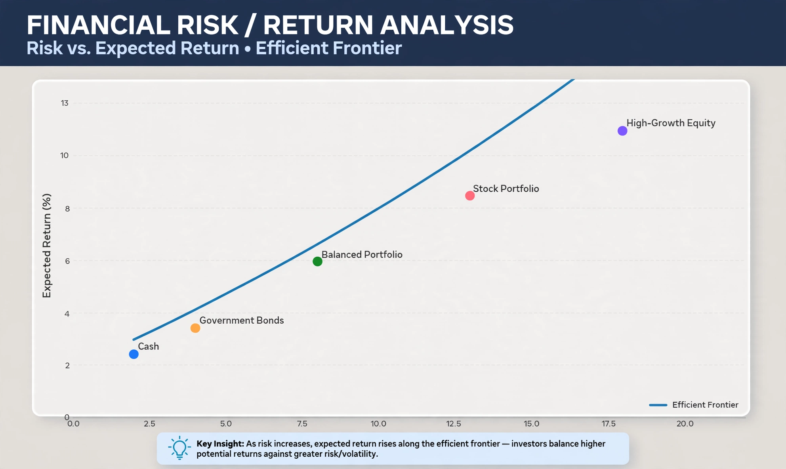

Risk premium

A risk premium is a measure of excess return that is required by an individual to compensate them for taking on a higher level of risk. It is the return in excess of the risk-free rate of return that an investment is expected to yield; an asset's risk premium is a form of compensation for investors who tolerate the extra risk, compared to a risk-free asset, in a given investment.
Risk premium = Expected return on asset − Risk-free rate
Equity risk premium
The equity risk premium is the excess return that investing in the stock market provides over a risk-free rate, such as the return on government bonds. It is a key input to asset-pricing models such as the capital asset pricing model (CAPM), in which an asset's expected return equals the risk-free rate plus its beta multiplied by the market risk premium. Historical estimates for mature markets commonly fall in the range of roughly 3–6 per cent per year, though estimates vary widely by period and methodology.
Other risk premia
- Credit spread – the extra yield on a corporate bond over a comparable government bond, compensating for default risk.
- Liquidity premium – extra return required for assets that are hard to sell quickly.
- Term premium – extra return for holding longer-maturity bonds, compensating for interest-rate risk.
- Size and value premia – in factor models, the historical tendency of small-cap and value stocks to outperform.
Risk premium in insurance and labour
In insurance, "risk premium" can denote the portion of a premium covering the expected cost of claims. In labour economics, compensating wage differentials for dangerous occupations are sometimes described as risk premia; studies of the value of a statistical life are based on such differentials.
The equity premium puzzle
Mehra and Prescott (1985) observed that the historical US equity premium was far larger than standard models of risk aversion could explain, a finding known as the equity premium puzzle, which has motivated extensive research in behavioural finance and macro-finance.